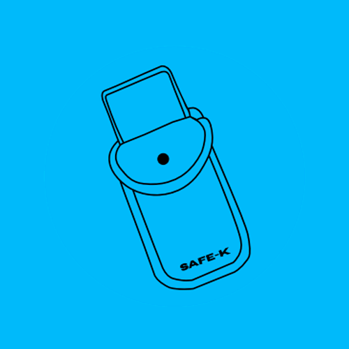
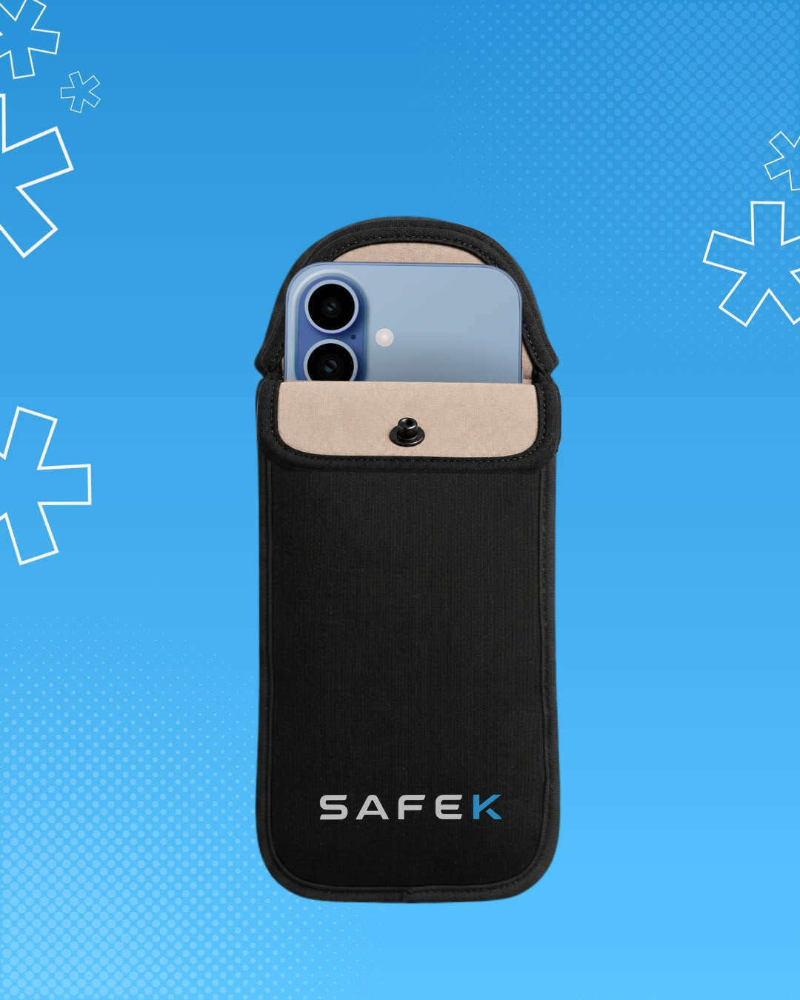
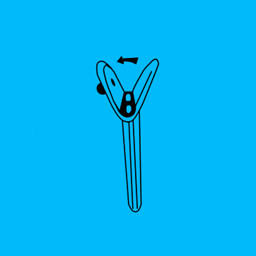
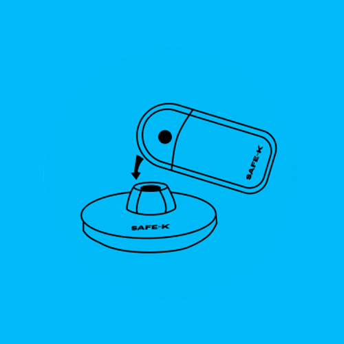

Guarde o celular
Ao entrar no espaço, coloque seu aparelho dentro da bolsa SAFE-K.
Tecnologia em pausa. Pessoas no centro.
A bolsa SAFE-K guarda o aparelho durante aulas, eventos e experiências. O celular continua com a pessoa e pode ser acessado nos pontos de desbloqueio definidos pelo espaço.

SAFE-K / Produto realComo funciona
A pessoa guarda o celular, mantém a bolsa consigo e acessa o aparelho na área definida pelo espaço.

Ao entrar no espaço, coloque seu aparelho dentro da bolsa SAFE-K.

A bolsa é trancada e continua com você durante toda a experiência.

Procure a área de desbloqueio e encoste a bolsa em uma base.
Produto SAFE-K patenteado
Onde usar
A aplicação muda conforme a rotina de cada lugar. Veja três exemplos e explore as demais possibilidades.
 Educação básica
Educação básicaMais atenção na aula. Mais convivência nos intervalos.
Conheça a aplicaçãoReuniões com atenção. Equipes mais conectadas.
Conheça a aplicaçãoConvidados presentes para viver cada encontro.
Conheça a aplicaçãoEncontre a aplicação ideal para o seu espaço.
Ver todas as aplicaçõesNa prática
Antes de começar, a instituição define quando a bolsa será usada, onde o celular poderá ser acessado e quem vai orientar as pessoas.
Ver o funcionamentoEscolha os espaços e períodos em que o uso do celular ficará em pausa.
Explique como guardar e travar o aparelho mantendo a bolsa com seu dono.
Indique os pontos de desbloqueio e a equipe de referência durante a atividade.
Combine o fluxo de desbloqueio ao fim da experiência.
Dúvidas frequentes
O celular permanece com a pessoa. Veja como o acesso é organizado.
Ver todas as respostasUma solução de guarda que ajuda a criar ambientes livres do uso de celulares. O aparelho é colocado em uma bolsa que fica trancada durante a experiência, permanecendo com seu dono.
Não. O celular continua em sua posse, dentro da bolsa. Você permanece com o aparelho durante todo o período de uso.
Basta encostar a bolsa em uma base de desbloqueio, disponível nos pontos definidos pela organização do espaço. A equipe local orienta o acesso.
Procure a área de desbloqueio ou a equipe responsável. A organização deve comunicar os pontos de acesso e orientar situações que demandem o uso do aparelho.
Vamos construir essa experiência
Conte sobre o seu espaço. A gente ajuda você a entender o próximo passo.